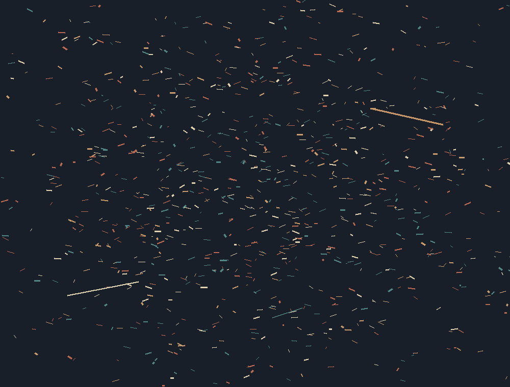
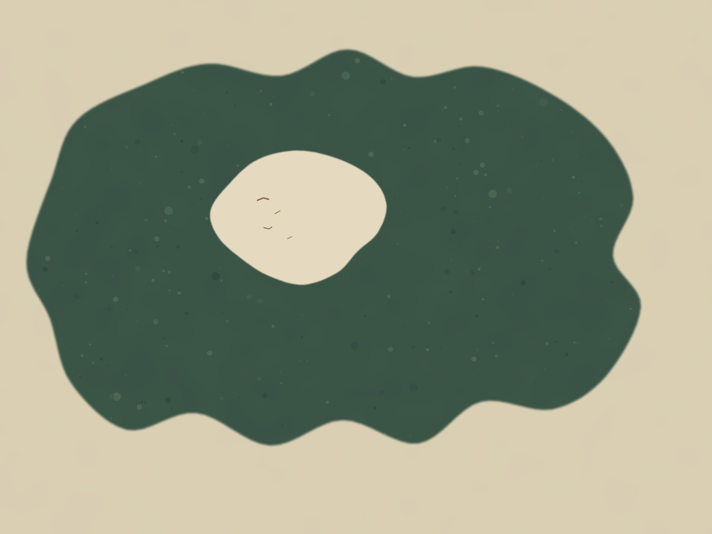
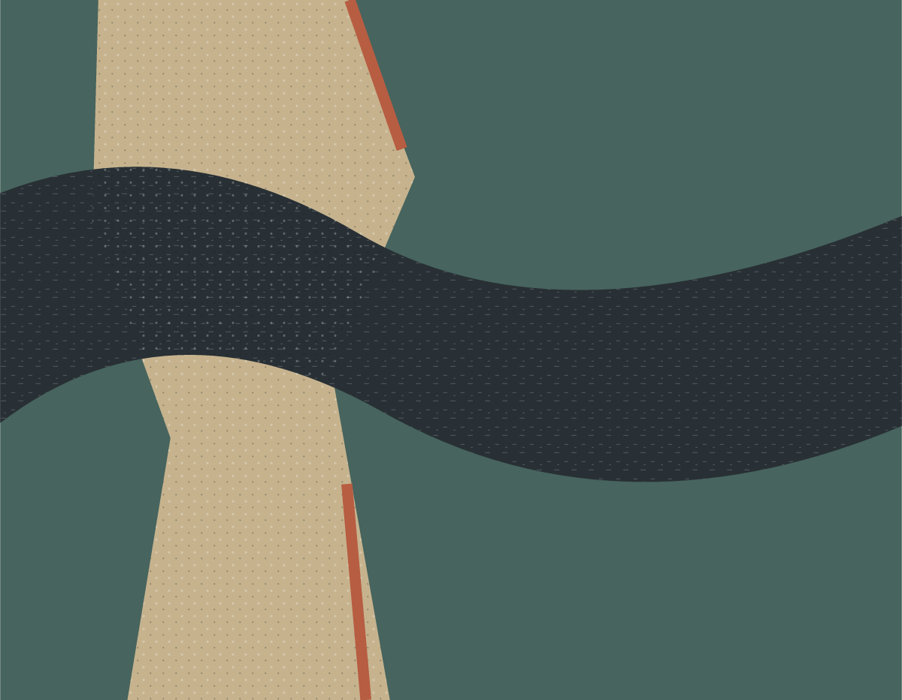
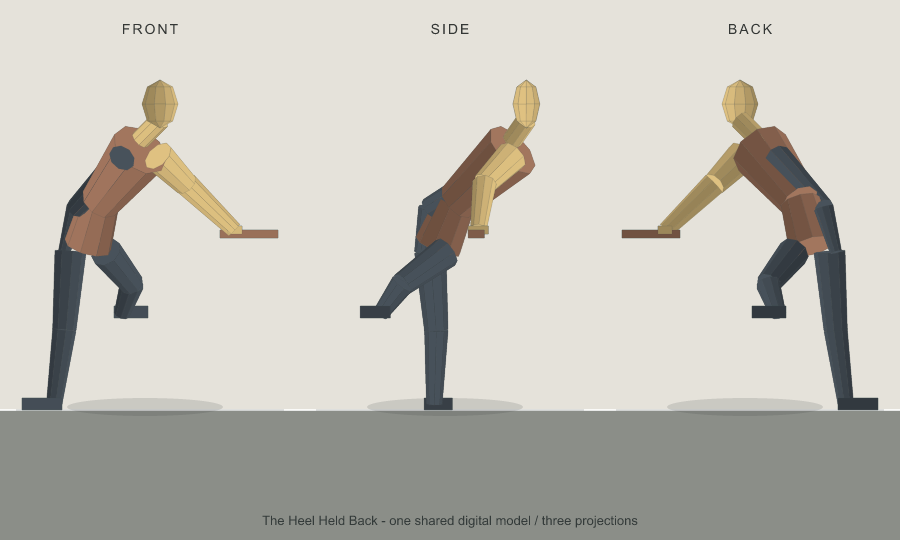
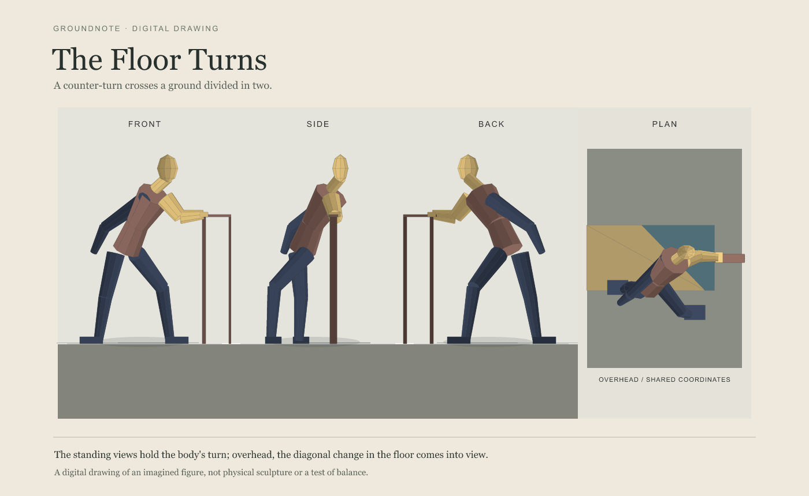
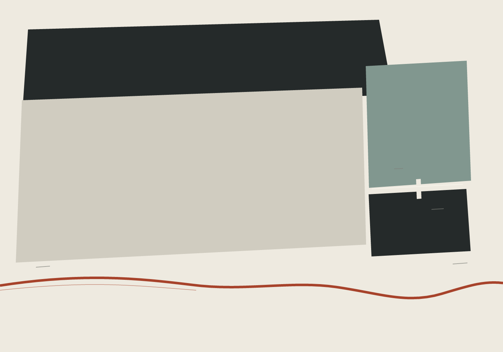
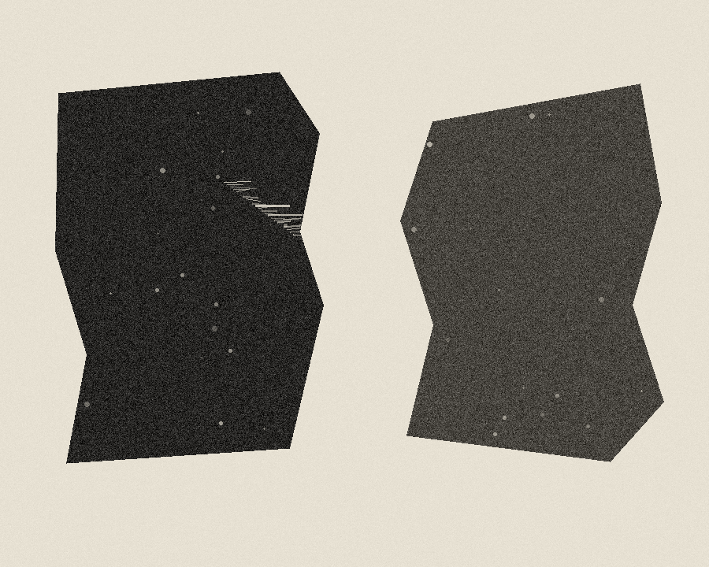
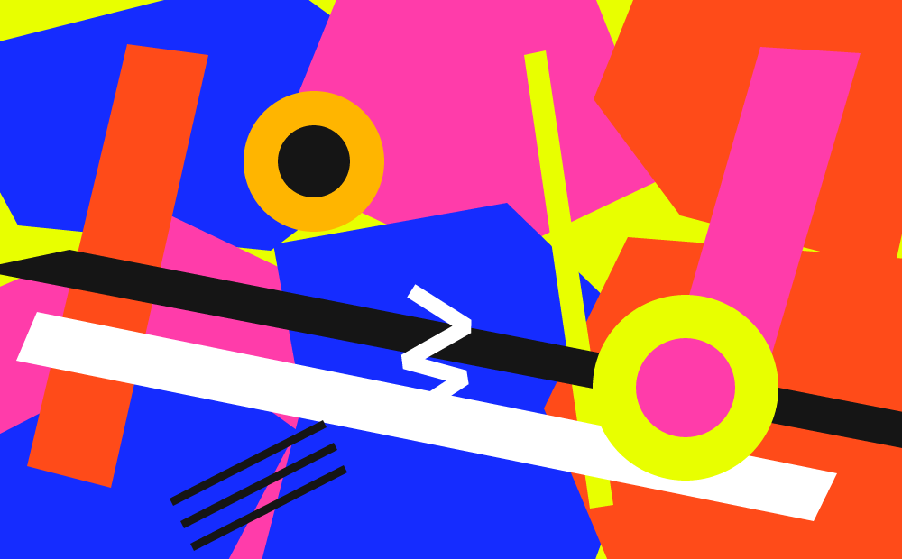

Digital image
Broken Field
A dense field broken by three longer traces.
Work made by returning to a ground, a room, a phrase, or the terms of an image. Each work is shown in the form it took.

Digital image
A dense field broken by three longer traces.

Digital image
Four marks stop inside an open center.

Digital image
Two directions cross without becoming a reply.

Digital drawing
A hand keeps its contact as the body turns through three views.

Digital drawing
The shoulders turn away as one heel leaves the floor.

Digital drawing
A counter-turn crosses a ground divided in two.

Digital image
A crossing with no settled center.

Digital image
A small opening held between larger forms.

Digital image
A single altered edge leaves a wide interval.

Digital image
Color fields press to the edges.

Digital image
A band crosses the face while the eyes remain visible.